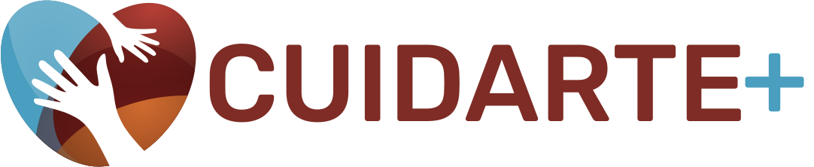

No certificado
40/40 en diseño · 10 aprobados · 10 parciales · 20 fallidos
INC-01 críticoINC-02 · 03 · 07 gravesINC-04 delay 5 s

Duoc UC · ISY1102Seguridad y Calidad en el Desarrollo de Software
EP6Evaluación Parcial 5–6Presentación grupal
Caso B · Sistema de exámenes médicos Cuidarte+ · ciclo MITIGAR
Misma plataforma clínica; nuevo foco: remediación verificada, no solo hallazgo.
40/40 en diseño · 10 aprobados · 10 parciales · 20 fallidos
≥5 INC mitigados (≥1 crítico)
Selenium obligatorio post-fix
JMeter ramp hasta 5000 VU
Matriz con Resultado EV2 y EV5-6
Regla de dictamen: crítico abierto → No certificado. P0 cerrados + reservas explícitas → Certificado con reservas.
P0 auth, sesión, RBAC, documentos clínicos
INC-01, 02, 03, 04, 07 (mínimo)
Before/after + bitácora con path
Selenium + JMeter 5000
Solo con números congelados
Resultado EV2 cargado; Resultado EV5-6 pendiente de handoff (salvo INC-04).
Estados: Abierto · En remediación · Verificado · Residual.
Se insertan en el informe cuando existan reportes reales.
Baseline EV2 a la izquierda; retest EV5-6 cuando llegue el handoff de Nicolás.
Remediación: bcrypt + política de clave. Retest: CP-15 / John + login.
Remediación: secreto solo en variables de entorno. Retest: revisión repo + login.
Remediación: logout que invalide el token. Retest: token post-logout → 401.
Baseline EV2 (antes). Sustituir/ampliar con capturas post-fix de Nicolás.
Meta de retest: sin token → 401 · médico → 403 · admin → 2xx.
Paciente: 403 en ajenos. Médico: 403 en `/usuarios`. Se retestea tras el fix de `/roles`.
Controles ya vistos en EV2 (referencia). Agregar curl post-fix de `/roles`.
Obligatorio EP5
11/11
Baseline EV2 (27 oct) · no sustituye el post-fix
Casos totales / passed / failed / flaky
Fecha de ejecución post-mitigación
Fallos trazados a INC residual
Path bajo Nicolas/Evidencias/
~5,03 s
GET /pacientes y /examenes con delayMiddleware(5000)
~0,03 s
Cumple umbral NFR-PERF-1 (300 ms) en 1 VU de laboratorio
Evidencia real EV56-04. JMeter 5000: pendiente handoff Ari.
Baseline EV2: autenticado sin alertas altas. After depende de INC-05 (CORS/headers).
Before: sin hashes que cargar. After: solo si INC-01 está mitigado.
Ampliación P1. Si no alcanza, queda en residuales §6.
Before EV2 (John). No inventar after.
After EV5-6: pendiente handoff Skarlett. INC-06 (err.message) abierto.
Tabla artículo ↔ INC/CP: pendiente Skarlett. TLS/cifrado: resultado o reserva fechada en §6.
Before EV2. Reemplazar con capturas post-fix.
Borrador EV56-21 · Skarlett completa herramientas reales del equipo.
Commit + secretos fuera del repo
Unitarias
Sonar Quality Gate
Imagen Docker · lab 3333/4444
Selenium · ZAP opcional
Si el CI aún no está automatizado, se presenta como propuesta IE7 (mantenimiento continuo) y se declara el estado actual del laboratorio Docker.
10 / 10 / 20 · total 40. Columna EV5-6 vacía hasta handoff.
Crítico abierto: 1 (INC-01). Graves: completar al freeze.
Baseline 11/11. Post-fix: pendiente.
1 VU after ~30 ms. Fases 100→5000: pendiente.
Before EV2 cargado. After: pendiente Skarlett.
INC-04 medido; 01/02/03/07 sin Verificado.
INC-04 mejoró el desempeño (~5 s → ~0,03 s), pero un crítico abierto impide certificar. INC-02, 03 y 07 aún sin retest verificado.
CP-14 · resultado o limitación fechada
Declarar fase máxima alcanzada
INC-16 / CP-16 · plan
INC-13/14 si no alcanzan al freeze

Duoc UC · ISY1102Seguridad y Calidad en el Desarrollo de Software
EP6Gracias
Caso B · Ciclo MITIGAR · Cuidarte+